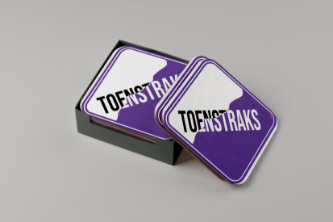
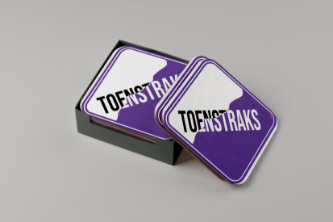

WHO AM I?
Hi, my name is Denis Brakel, I am a 20-year-old student at the hogeschool Zuyd in Maastricht. Currently, I am in the second year of my degree which is Communication and Multimedia Design. I am a very social, enthusiastic, and dynamic designer who is very open-minded.
My passion is graphic design and I like to try out new things. I am also interested in development even though I find it challenging but I am always open to taking on new challenges and pushing my limits.


 
